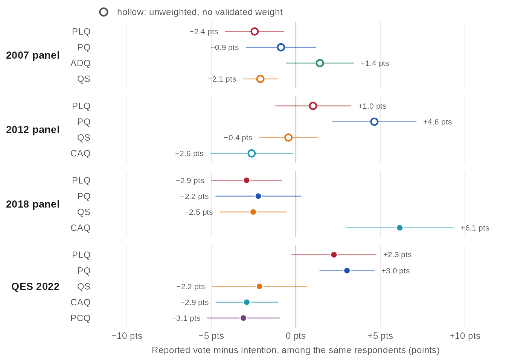
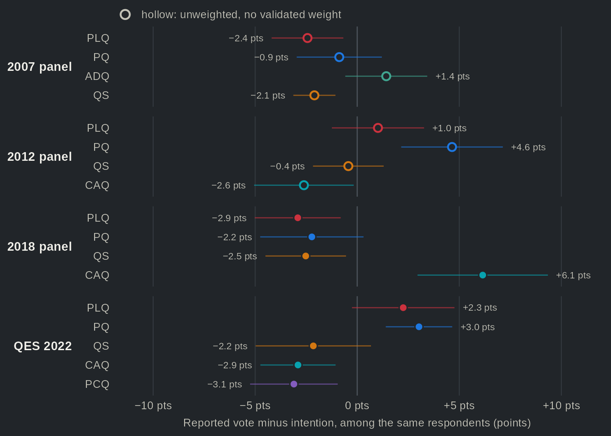

Are Quebec elections decided during the campaign?
Source:vignettes/articles/transitions.Rmd
transitions.RmdSince the 1988 federal election, Canadian election studies have shown that opinion can move a great deal between the start of a campaign and the vote (Johnston et al. 1992). It is often said that Quebec elections are decided at the last minute, a claim that returns whenever the polls miss the result, as they did in 1998 and 2018. In 1998 the polls had the Parti Québécois (PQ) ahead, yet the Parti libéral du Québec (PLQ) took more of the valid votes (43.6% compared to 42.9%). In 2018 they forecast a close race between the PLQ and the Coalition avenir Québec (CAQ), which won by 13 points. Each time, part of the explanation was sought among voters who changed their minds at the end of the campaign and among non-disclosers, who would not reveal their intention. Durand and Blais (1999) reject both a late Liberal rise and a lower PQ turnout in 1998, and trace the error to sampling and to how non-respondents behaved; for 2018, they conclude that last-minute shifts and the vote of non-disclosers explain most of the gap (Durand and Blais 2020).
However, a cross-section tells us how the vote ended up, not who moved. Panels can, because they interview the same people during the campaign and after the vote. Five Quebec election surveys did so, from the 1998 CROP and CREATEC polls to the 2022 Quebec Election Study, including the panels Claire Durand ran in 2007, 2012 and 2018. We use them to ask a simple question: how many Quebec voters change their minds during a campaign, and who gains from it? Between 72% and 78% of those who voted reported the party they had named during the campaign. The undecided were a small group, from 6% to 10% of voters, and voters who switched from one party to another outnumbered them in every panel except 2018, where the two groups were about the same size. On net, these moves rarely changed a party’s share by more than a few points. The largest gain is the one the 2018 post-mortem pointed to: among the same respondents, the CAQ gained 6.1 points between intention and vote, and 37% of that year’s undecided voted CAQ. In short, a Quebec campaign moves many voters but, on net, few votes.
Most voters did what they said


Source: qesR. Respondents interviewed during the campaign and after the election, in the 2018 Durand panel and the QES 2022, weighted with the post-election weight. Rows: the party intended, with the number of respondents; the undecided named no party, even when asked (where the panel asked) which party they leaned to. Each row includes those who did not vote. Grey cells have no value: the 2018 panel did not list the PCQ (n.l.), the 2022 campaign question had no 'would not vote' answer, and rows of fewer than 30 respondents are not drawn. Confidence intervals and the 1998, 2007 and 2012 panels are in the table view.
Table view
| Election | Study | Intention | Reported vote | Row %, [95% CI] | n (row) | Weighting |
|---|---|---|---|---|---|---|
| 1998 | 1998 polls | PLQ | PLQ | 80.1 [75.3, 84.1] | 311 | unweighted (weight under review) |
| 1998 | 1998 polls | PLQ | PQ | 5.1 [3.2, 8.2] | 311 | unweighted (weight under review) |
| 1998 | 1998 polls | PLQ | ADQ | 4.5 [2.7, 7.5] | 311 | unweighted (weight under review) |
| 1998 | 1998 polls | PLQ | QS | — | 311 | unweighted (weight under review) |
| 1998 | 1998 polls | PLQ | CAQ | — | 311 | unweighted (weight under review) |
| 1998 | 1998 polls | PLQ | PCQ | — | 311 | unweighted (weight under review) |
| 1998 | 1998 polls | PLQ | Other | 0.3 [0.0, 2.2] | 311 | unweighted (weight under review) |
| 1998 | 1998 polls | PLQ | Did not vote | 10.0 [7.1, 13.8] | 311 | unweighted (weight under review) |
| 1998 | 1998 polls | PQ | PLQ | 3.9 [2.5, 6.2] | 433 | unweighted (weight under review) |
| 1998 | 1998 polls | PQ | PQ | 85.7 [82.1, 88.7] | 433 | unweighted (weight under review) |
| 1998 | 1998 polls | PQ | ADQ | 2.5 [1.4, 4.5] | 433 | unweighted (weight under review) |
| 1998 | 1998 polls | PQ | QS | — | 433 | unweighted (weight under review) |
| 1998 | 1998 polls | PQ | CAQ | — | 433 | unweighted (weight under review) |
| 1998 | 1998 polls | PQ | PCQ | — | 433 | unweighted (weight under review) |
| 1998 | 1998 polls | PQ | Other | 0.9 [0.3, 2.4] | 433 | unweighted (weight under review) |
| 1998 | 1998 polls | PQ | Did not vote | 6.9 [4.9, 9.7] | 433 | unweighted (weight under review) |
| 1998 | 1998 polls | ADQ | PLQ | 13.1 [9.5, 17.8] | 259 | unweighted (weight under review) |
| 1998 | 1998 polls | ADQ | PQ | 15.4 [11.5, 20.4] | 259 | unweighted (weight under review) |
| 1998 | 1998 polls | ADQ | ADQ | 56.0 [49.9, 61.9] | 259 | unweighted (weight under review) |
| 1998 | 1998 polls | ADQ | QS | — | 259 | unweighted (weight under review) |
| 1998 | 1998 polls | ADQ | CAQ | — | 259 | unweighted (weight under review) |
| 1998 | 1998 polls | ADQ | PCQ | — | 259 | unweighted (weight under review) |
| 1998 | 1998 polls | ADQ | Other | 1.2 [0.4, 3.5] | 259 | unweighted (weight under review) |
| 1998 | 1998 polls | ADQ | Did not vote | 14.3 [10.5, 19.1] | 259 | unweighted (weight under review) |
| 1998 | 1998 polls | Other | PLQ | n < 30 | 26 | unweighted (weight under review) |
| 1998 | 1998 polls | Other | PQ | n < 30 | 26 | unweighted (weight under review) |
| 1998 | 1998 polls | Other | ADQ | n < 30 | 26 | unweighted (weight under review) |
| 1998 | 1998 polls | Other | QS | — | 26 | unweighted (weight under review) |
| 1998 | 1998 polls | Other | CAQ | — | 26 | unweighted (weight under review) |
| 1998 | 1998 polls | Other | PCQ | — | 26 | unweighted (weight under review) |
| 1998 | 1998 polls | Other | Other | n < 30 | 26 | unweighted (weight under review) |
| 1998 | 1998 polls | Other | Did not vote | n < 30 | 26 | unweighted (weight under review) |
| 1998 | 1998 polls | None / would not vote | PLQ | n < 30 | 22 | unweighted (weight under review) |
| 1998 | 1998 polls | None / would not vote | PQ | n < 30 | 22 | unweighted (weight under review) |
| 1998 | 1998 polls | None / would not vote | ADQ | n < 30 | 22 | unweighted (weight under review) |
| 1998 | 1998 polls | None / would not vote | QS | — | 22 | unweighted (weight under review) |
| 1998 | 1998 polls | None / would not vote | CAQ | — | 22 | unweighted (weight under review) |
| 1998 | 1998 polls | None / would not vote | PCQ | — | 22 | unweighted (weight under review) |
| 1998 | 1998 polls | None / would not vote | Other | n < 30 | 22 | unweighted (weight under review) |
| 1998 | 1998 polls | None / would not vote | Did not vote | n < 30 | 22 | unweighted (weight under review) |
| 1998 | 1998 polls | Undecided | PLQ | 38.3 [28.4, 49.3] | 81 | unweighted (weight under review) |
| 1998 | 1998 polls | Undecided | PQ | 28.4 [19.7, 39.1] | 81 | unweighted (weight under review) |
| 1998 | 1998 polls | Undecided | ADQ | 13.6 [7.7, 22.9] | 81 | unweighted (weight under review) |
| 1998 | 1998 polls | Undecided | QS | — | 81 | unweighted (weight under review) |
| 1998 | 1998 polls | Undecided | CAQ | — | 81 | unweighted (weight under review) |
| 1998 | 1998 polls | Undecided | PCQ | — | 81 | unweighted (weight under review) |
| 1998 | 1998 polls | Undecided | Other | 2.5 [0.6, 9.3] | 81 | unweighted (weight under review) |
| 1998 | 1998 polls | Undecided | Did not vote | 17.3 [10.5, 27.1] | 81 | unweighted (weight under review) |
| 2007 | 2007 panel | PLQ | PLQ | 73.2 [68.6, 77.3] | 395 | unweighted (weight under review) |
| 2007 | 2007 panel | PLQ | PQ | 3.0 [1.7, 5.3] | 395 | unweighted (weight under review) |
| 2007 | 2007 panel | PLQ | ADQ | 8.1 [5.8, 11.2] | 395 | unweighted (weight under review) |
| 2007 | 2007 panel | PLQ | QS | 0.5 [0.1, 2.0] | 395 | unweighted (weight under review) |
| 2007 | 2007 panel | PLQ | CAQ | — | 395 | unweighted (weight under review) |
| 2007 | 2007 panel | PLQ | PCQ | — | 395 | unweighted (weight under review) |
| 2007 | 2007 panel | PLQ | Other | 0.8 [0.2, 2.3] | 395 | unweighted (weight under review) |
| 2007 | 2007 panel | PLQ | Did not vote | 14.4 [11.3, 18.3] | 395 | unweighted (weight under review) |
| 2007 | 2007 panel | PQ | PLQ | 3.8 [2.3, 6.1] | 399 | unweighted (weight under review) |
| 2007 | 2007 panel | PQ | PQ | 67.4 [62.7, 71.8] | 399 | unweighted (weight under review) |
| 2007 | 2007 panel | PQ | ADQ | 9.0 [6.6, 12.3] | 399 | unweighted (weight under review) |
| 2007 | 2007 panel | PQ | QS | 1.5 [0.7, 3.3] | 399 | unweighted (weight under review) |
| 2007 | 2007 panel | PQ | CAQ | — | 399 | unweighted (weight under review) |
| 2007 | 2007 panel | PQ | PCQ | — | 399 | unweighted (weight under review) |
| 2007 | 2007 panel | PQ | Other | 1.8 [0.8, 3.6] | 399 | unweighted (weight under review) |
| 2007 | 2007 panel | PQ | Did not vote | 16.5 [13.2, 20.5] | 399 | unweighted (weight under review) |
| 2007 | 2007 panel | ADQ | PLQ | 4.3 [2.7, 6.9] | 370 | unweighted (weight under review) |
| 2007 | 2007 panel | ADQ | PQ | 11.1 [8.3, 14.7] | 370 | unweighted (weight under review) |
| 2007 | 2007 panel | ADQ | ADQ | 71.9 [67.1, 76.2] | 370 | unweighted (weight under review) |
| 2007 | 2007 panel | ADQ | QS | 1.1 [0.4, 2.8] | 370 | unweighted (weight under review) |
| 2007 | 2007 panel | ADQ | CAQ | — | 370 | unweighted (weight under review) |
| 2007 | 2007 panel | ADQ | PCQ | — | 370 | unweighted (weight under review) |
| 2007 | 2007 panel | ADQ | Other | 1.4 [0.6, 3.2] | 370 | unweighted (weight under review) |
| 2007 | 2007 panel | ADQ | Did not vote | 10.3 [7.6, 13.8] | 370 | unweighted (weight under review) |
| 2007 | 2007 panel | QS | PLQ | 5.1 [1.9, 12.7] | 79 | unweighted (weight under review) |
| 2007 | 2007 panel | QS | PQ | 21.5 [13.8, 31.9] | 79 | unweighted (weight under review) |
| 2007 | 2007 panel | QS | ADQ | 13.9 [7.9, 23.4] | 79 | unweighted (weight under review) |
| 2007 | 2007 panel | QS | QS | 41.8 [31.4, 52.9] | 79 | unweighted (weight under review) |
| 2007 | 2007 panel | QS | CAQ | — | 79 | unweighted (weight under review) |
| 2007 | 2007 panel | QS | PCQ | — | 79 | unweighted (weight under review) |
| 2007 | 2007 panel | QS | Other | 10.1 [5.1, 19.0] | 79 | unweighted (weight under review) |
| 2007 | 2007 panel | QS | Did not vote | 7.6 [3.5, 15.9] | 79 | unweighted (weight under review) |
| 2007 | 2007 panel | Other | PLQ | 13.9 [8.4, 22.1] | 101 | unweighted (weight under review) |
| 2007 | 2007 panel | Other | PQ | 15.8 [9.9, 24.3] | 101 | unweighted (weight under review) |
| 2007 | 2007 panel | Other | ADQ | 12.9 [7.6, 20.9] | 101 | unweighted (weight under review) |
| 2007 | 2007 panel | Other | QS | 3.0 [1.0, 8.8] | 101 | unweighted (weight under review) |
| 2007 | 2007 panel | Other | CAQ | — | 101 | unweighted (weight under review) |
| 2007 | 2007 panel | Other | PCQ | — | 101 | unweighted (weight under review) |
| 2007 | 2007 panel | Other | Other | 33.7 [25.1, 43.4] | 101 | unweighted (weight under review) |
| 2007 | 2007 panel | Other | Did not vote | 20.8 [14.0, 29.8] | 101 | unweighted (weight under review) |
| 2007 | 2007 panel | None / would not vote | PLQ | n < 30 | 29 | unweighted (weight under review) |
| 2007 | 2007 panel | None / would not vote | PQ | n < 30 | 29 | unweighted (weight under review) |
| 2007 | 2007 panel | None / would not vote | ADQ | n < 30 | 29 | unweighted (weight under review) |
| 2007 | 2007 panel | None / would not vote | QS | n < 30 | 29 | unweighted (weight under review) |
| 2007 | 2007 panel | None / would not vote | CAQ | — | 29 | unweighted (weight under review) |
| 2007 | 2007 panel | None / would not vote | PCQ | — | 29 | unweighted (weight under review) |
| 2007 | 2007 panel | None / would not vote | Other | n < 30 | 29 | unweighted (weight under review) |
| 2007 | 2007 panel | None / would not vote | Did not vote | n < 30 | 29 | unweighted (weight under review) |
| 2007 | 2007 panel | Undecided | PLQ | 19.2 [12.8, 27.9] | 104 | unweighted (weight under review) |
| 2007 | 2007 panel | Undecided | PQ | 26.9 [19.3, 36.2] | 104 | unweighted (weight under review) |
| 2007 | 2007 panel | Undecided | ADQ | 23.1 [16.0, 32.1] | 104 | unweighted (weight under review) |
| 2007 | 2007 panel | Undecided | QS | 0.0 | 104 | unweighted (weight under review) |
| 2007 | 2007 panel | Undecided | CAQ | — | 104 | unweighted (weight under review) |
| 2007 | 2007 panel | Undecided | PCQ | — | 104 | unweighted (weight under review) |
| 2007 | 2007 panel | Undecided | Other | 4.8 [2.0, 11.0] | 104 | unweighted (weight under review) |
| 2007 | 2007 panel | Undecided | Did not vote | 26.0 [18.4, 35.2] | 104 | unweighted (weight under review) |
| 2012 | 2012 panel | PLQ | PLQ | 82.3 [75.5, 87.5] | 158 | unweighted (weight under review) |
| 2012 | 2012 panel | PLQ | PQ | 3.2 [1.3, 7.4] | 158 | unweighted (weight under review) |
| 2012 | 2012 panel | PLQ | ADQ | — | 158 | unweighted (weight under review) |
| 2012 | 2012 panel | PLQ | QS | 1.3 [0.3, 4.9] | 158 | unweighted (weight under review) |
| 2012 | 2012 panel | PLQ | CAQ | 6.3 [3.4, 11.4] | 158 | unweighted (weight under review) |
| 2012 | 2012 panel | PLQ | PCQ | n.l. | 158 | unweighted (weight under review) |
| 2012 | 2012 panel | PLQ | Other | 0.6 [0.1, 4.4] | 158 | unweighted (weight under review) |
| 2012 | 2012 panel | PLQ | Did not vote | 6.3 [3.4, 11.4] | 158 | unweighted (weight under review) |
| 2012 | 2012 panel | PQ | PLQ | 1.0 [0.2, 3.7] | 210 | unweighted (weight under review) |
| 2012 | 2012 panel | PQ | PQ | 89.0 [84.1, 92.6] | 210 | unweighted (weight under review) |
| 2012 | 2012 panel | PQ | ADQ | — | 210 | unweighted (weight under review) |
| 2012 | 2012 panel | PQ | QS | 2.4 [1.0, 5.6] | 210 | unweighted (weight under review) |
| 2012 | 2012 panel | PQ | CAQ | 1.0 [0.2, 3.7] | 210 | unweighted (weight under review) |
| 2012 | 2012 panel | PQ | PCQ | n.l. | 210 | unweighted (weight under review) |
| 2012 | 2012 panel | PQ | Other | 0.0 | 210 | unweighted (weight under review) |
| 2012 | 2012 panel | PQ | Did not vote | 6.7 [4.0, 10.9] | 210 | unweighted (weight under review) |
| 2012 | 2012 panel | QS | PLQ | 0.0 | 47 | unweighted (weight under review) |
| 2012 | 2012 panel | QS | PQ | 27.7 [16.8, 42.0] | 47 | unweighted (weight under review) |
| 2012 | 2012 panel | QS | ADQ | — | 47 | unweighted (weight under review) |
| 2012 | 2012 panel | QS | QS | 57.4 [43.1, 70.7] | 47 | unweighted (weight under review) |
| 2012 | 2012 panel | QS | CAQ | 4.3 [1.1, 15.5] | 47 | unweighted (weight under review) |
| 2012 | 2012 panel | QS | PCQ | n.l. | 47 | unweighted (weight under review) |
| 2012 | 2012 panel | QS | Other | 4.3 [1.1, 15.5] | 47 | unweighted (weight under review) |
| 2012 | 2012 panel | QS | Did not vote | 6.4 [2.1, 18.0] | 47 | unweighted (weight under review) |
| 2012 | 2012 panel | CAQ | PLQ | 6.6 [3.7, 11.5] | 167 | unweighted (weight under review) |
| 2012 | 2012 panel | CAQ | PQ | 9.0 [5.5, 14.4] | 167 | unweighted (weight under review) |
| 2012 | 2012 panel | CAQ | ADQ | — | 167 | unweighted (weight under review) |
| 2012 | 2012 panel | CAQ | QS | 2.4 [0.9, 6.2] | 167 | unweighted (weight under review) |
| 2012 | 2012 panel | CAQ | CAQ | 72.5 [65.2, 78.7] | 167 | unweighted (weight under review) |
| 2012 | 2012 panel | CAQ | PCQ | n.l. | 167 | unweighted (weight under review) |
| 2012 | 2012 panel | CAQ | Other | 1.2 [0.3, 4.7] | 167 | unweighted (weight under review) |
| 2012 | 2012 panel | CAQ | Did not vote | 8.4 [5.0, 13.7] | 167 | unweighted (weight under review) |
| 2012 | 2012 panel | Other | PLQ | 10.5 [4.0, 24.9] | 38 | unweighted (weight under review) |
| 2012 | 2012 panel | Other | PQ | 18.4 [9.0, 33.9] | 38 | unweighted (weight under review) |
| 2012 | 2012 panel | Other | ADQ | — | 38 | unweighted (weight under review) |
| 2012 | 2012 panel | Other | QS | 10.5 [4.0, 24.9] | 38 | unweighted (weight under review) |
| 2012 | 2012 panel | Other | CAQ | 5.3 [1.3, 18.8] | 38 | unweighted (weight under review) |
| 2012 | 2012 panel | Other | PCQ | n.l. | 38 | unweighted (weight under review) |
| 2012 | 2012 panel | Other | Other | 50.0 [34.6, 65.4] | 38 | unweighted (weight under review) |
| 2012 | 2012 panel | Other | Did not vote | 5.3 [1.3, 18.8] | 38 | unweighted (weight under review) |
| 2012 | 2012 panel | None / would not vote | PLQ | n < 30 | 8 | unweighted (weight under review) |
| 2012 | 2012 panel | None / would not vote | PQ | n < 30 | 8 | unweighted (weight under review) |
| 2012 | 2012 panel | None / would not vote | ADQ | — | 8 | unweighted (weight under review) |
| 2012 | 2012 panel | None / would not vote | QS | n < 30 | 8 | unweighted (weight under review) |
| 2012 | 2012 panel | None / would not vote | CAQ | n < 30 | 8 | unweighted (weight under review) |
| 2012 | 2012 panel | None / would not vote | PCQ | n.l. | 8 | unweighted (weight under review) |
| 2012 | 2012 panel | None / would not vote | Other | n < 30 | 8 | unweighted (weight under review) |
| 2012 | 2012 panel | None / would not vote | Did not vote | n < 30 | 8 | unweighted (weight under review) |
| 2012 | 2012 panel | Undecided | PLQ | 29.5 [19.4, 42.1] | 61 | unweighted (weight under review) |
| 2012 | 2012 panel | Undecided | PQ | 23.0 [14.1, 35.1] | 61 | unweighted (weight under review) |
| 2012 | 2012 panel | Undecided | ADQ | — | 61 | unweighted (weight under review) |
| 2012 | 2012 panel | Undecided | QS | 3.3 [0.8, 12.2] | 61 | unweighted (weight under review) |
| 2012 | 2012 panel | Undecided | CAQ | 14.8 [7.9, 26.0] | 61 | unweighted (weight under review) |
| 2012 | 2012 panel | Undecided | PCQ | n.l. | 61 | unweighted (weight under review) |
| 2012 | 2012 panel | Undecided | Other | 4.9 [1.6, 14.2] | 61 | unweighted (weight under review) |
| 2012 | 2012 panel | Undecided | Did not vote | 24.6 [15.4, 36.9] | 61 | unweighted (weight under review) |
| 2018 | 2018 panel | PLQ | PLQ | 79.3 [72.6, 84.7] | 226 | weighted |
| 2018 | 2018 panel | PLQ | PQ | 0.0 | 226 | weighted |
| 2018 | 2018 panel | PLQ | ADQ | — | 226 | weighted |
| 2018 | 2018 panel | PLQ | QS | 0.8 [0.2, 3.6] | 226 | weighted |
| 2018 | 2018 panel | PLQ | CAQ | 5.8 [3.1, 10.7] | 226 | weighted |
| 2018 | 2018 panel | PLQ | PCQ | n.l. | 226 | weighted |
| 2018 | 2018 panel | PLQ | Other | 2.0 [0.9, 4.6] | 226 | weighted |
| 2018 | 2018 panel | PLQ | Did not vote | 12.1 [8.0, 17.9] | 226 | weighted |
| 2018 | 2018 panel | PQ | PLQ | 0.7 [0.2, 2.8] | 115 | weighted |
| 2018 | 2018 panel | PQ | PQ | 69.3 [56.0, 80.0] | 115 | weighted |
| 2018 | 2018 panel | PQ | ADQ | — | 115 | weighted |
| 2018 | 2018 panel | PQ | QS | 0.0 | 115 | weighted |
| 2018 | 2018 panel | PQ | CAQ | 11.7 [5.5, 23.1] | 115 | weighted |
| 2018 | 2018 panel | PQ | PCQ | n.l. | 115 | weighted |
| 2018 | 2018 panel | PQ | Other | 0.0 | 115 | weighted |
| 2018 | 2018 panel | PQ | Did not vote | 18.3 [9.6, 32.0] | 115 | weighted |
| 2018 | 2018 panel | QS | PLQ | 0.0 | 109 | weighted |
| 2018 | 2018 panel | QS | PQ | 9.6 [5.1, 17.6] | 109 | weighted |
| 2018 | 2018 panel | QS | ADQ | — | 109 | weighted |
| 2018 | 2018 panel | QS | QS | 67.8 [56.9, 77.1] | 109 | weighted |
| 2018 | 2018 panel | QS | CAQ | 11.1 [6.0, 19.7] | 109 | weighted |
| 2018 | 2018 panel | QS | PCQ | n.l. | 109 | weighted |
| 2018 | 2018 panel | QS | Other | 3.0 [0.7, 11.4] | 109 | weighted |
| 2018 | 2018 panel | QS | Did not vote | 8.5 [4.1, 16.9] | 109 | weighted |
| 2018 | 2018 panel | CAQ | PLQ | 2.5 [0.8, 7.4] | 219 | weighted |
| 2018 | 2018 panel | CAQ | PQ | 0.0 | 219 | weighted |
| 2018 | 2018 panel | CAQ | ADQ | — | 219 | weighted |
| 2018 | 2018 panel | CAQ | QS | 0.5 [0.1, 3.2] | 219 | weighted |
| 2018 | 2018 panel | CAQ | CAQ | 85.5 [79.0, 90.3] | 219 | weighted |
| 2018 | 2018 panel | CAQ | PCQ | n.l. | 219 | weighted |
| 2018 | 2018 panel | CAQ | Other | 0.9 [0.3, 3.0] | 219 | weighted |
| 2018 | 2018 panel | CAQ | Did not vote | 10.6 [6.6, 16.5] | 219 | weighted |
| 2018 | 2018 panel | Other | PLQ | 0.0 | 34 | weighted |
| 2018 | 2018 panel | Other | PQ | 0.0 | 34 | weighted |
| 2018 | 2018 panel | Other | ADQ | — | 34 | weighted |
| 2018 | 2018 panel | Other | QS | 3.7 [0.9, 14.1] | 34 | weighted |
| 2018 | 2018 panel | Other | CAQ | 0.0 | 34 | weighted |
| 2018 | 2018 panel | Other | PCQ | n.l. | 34 | weighted |
| 2018 | 2018 panel | Other | Other | 85.3 [69.5, 93.7] | 34 | weighted |
| 2018 | 2018 panel | Other | Did not vote | 11.0 [4.0, 26.6] | 34 | weighted |
| 2018 | 2018 panel | None / would not vote | PLQ | 1.6 [0.2, 10.6] | 37 | weighted |
| 2018 | 2018 panel | None / would not vote | PQ | 2.0 [0.3, 13.2] | 37 | weighted |
| 2018 | 2018 panel | None / would not vote | ADQ | — | 37 | weighted |
| 2018 | 2018 panel | None / would not vote | QS | 4.2 [1.0, 15.8] | 37 | weighted |
| 2018 | 2018 panel | None / would not vote | CAQ | 22.0 [10.0, 41.8] | 37 | weighted |
| 2018 | 2018 panel | None / would not vote | PCQ | n.l. | 37 | weighted |
| 2018 | 2018 panel | None / would not vote | Other | 2.8 [0.6, 11.2] | 37 | weighted |
| 2018 | 2018 panel | None / would not vote | Did not vote | 67.4 [48.4, 82.0] | 37 | weighted |
| 2018 | 2018 panel | Undecided | PLQ | 13.4 [7.0, 24.1] | 75 | weighted |
| 2018 | 2018 panel | Undecided | PQ | 7.9 [3.5, 17.1] | 75 | weighted |
| 2018 | 2018 panel | Undecided | ADQ | — | 75 | weighted |
| 2018 | 2018 panel | Undecided | QS | 9.0 [3.2, 22.8] | 75 | weighted |
| 2018 | 2018 panel | Undecided | CAQ | 36.9 [24.9, 50.8] | 75 | weighted |
| 2018 | 2018 panel | Undecided | PCQ | n.l. | 75 | weighted |
| 2018 | 2018 panel | Undecided | Other | 5.9 [2.3, 14.5] | 75 | weighted |
| 2018 | 2018 panel | Undecided | Did not vote | 26.7 [16.4, 40.4] | 75 | weighted |
| 2022 | QES 2022 | PLQ | PLQ | 78.3 [67.4, 86.3] | 126 | weighted |
| 2022 | QES 2022 | PLQ | PQ | 3.7 [1.4, 9.6] | 126 | weighted |
| 2022 | QES 2022 | PLQ | ADQ | — | 126 | weighted |
| 2022 | QES 2022 | PLQ | QS | 6.8 [2.9, 15.3] | 126 | weighted |
| 2022 | QES 2022 | PLQ | CAQ | 1.6 [0.6, 4.1] | 126 | weighted |
| 2022 | QES 2022 | PLQ | PCQ | 1.1 [0.3, 4.6] | 126 | weighted |
| 2022 | QES 2022 | PLQ | Other | 0.4 [0.1, 2.8] | 126 | weighted |
| 2022 | QES 2022 | PLQ | Did not vote | 7.9 [3.6, 16.8] | 126 | weighted |
| 2022 | QES 2022 | PQ | PLQ | 2.1 [0.7, 6.0] | 152 | weighted |
| 2022 | QES 2022 | PQ | PQ | 81.5 [72.7, 88.0] | 152 | weighted |
| 2022 | QES 2022 | PQ | ADQ | — | 152 | weighted |
| 2022 | QES 2022 | PQ | QS | 5.2 [2.2, 12.0] | 152 | weighted |
| 2022 | QES 2022 | PQ | CAQ | 4.0 [1.7, 9.4] | 152 | weighted |
| 2022 | QES 2022 | PQ | PCQ | 1.2 [0.2, 7.9] | 152 | weighted |
| 2022 | QES 2022 | PQ | Other | 0.0 | 152 | weighted |
| 2022 | QES 2022 | PQ | Did not vote | 5.9 [2.4, 13.7] | 152 | weighted |
| 2022 | QES 2022 | QS | PLQ | 11.2 [4.8, 23.9] | 221 | weighted |
| 2022 | QES 2022 | QS | PQ | 8.4 [5.3, 13.1] | 221 | weighted |
| 2022 | QES 2022 | QS | ADQ | — | 221 | weighted |
| 2022 | QES 2022 | QS | QS | 66.8 [55.9, 76.2] | 221 | weighted |
| 2022 | QES 2022 | QS | CAQ | 2.2 [0.7, 6.6] | 221 | weighted |
| 2022 | QES 2022 | QS | PCQ | 0.9 [0.2, 3.7] | 221 | weighted |
| 2022 | QES 2022 | QS | Other | 4.2 [0.7, 21.6] | 221 | weighted |
| 2022 | QES 2022 | QS | Did not vote | 6.3 [3.4, 11.3] | 221 | weighted |
| 2022 | QES 2022 | CAQ | PLQ | 1.9 [0.8, 4.6] | 379 | weighted |
| 2022 | QES 2022 | CAQ | PQ | 6.0 [4.0, 9.0] | 379 | weighted |
| 2022 | QES 2022 | CAQ | ADQ | — | 379 | weighted |
| 2022 | QES 2022 | CAQ | QS | 2.6 [1.4, 5.0] | 379 | weighted |
| 2022 | QES 2022 | CAQ | CAQ | 83.0 [78.0, 87.0] | 379 | weighted |
| 2022 | QES 2022 | CAQ | PCQ | 0.3 [0.0, 2.0] | 379 | weighted |
| 2022 | QES 2022 | CAQ | Other | 0.1 [0.0, 1.0] | 379 | weighted |
| 2022 | QES 2022 | CAQ | Did not vote | 6.1 [3.7, 10.1] | 379 | weighted |
| 2022 | QES 2022 | PCQ | PLQ | 6.2 [2.7, 13.4] | 172 | weighted |
| 2022 | QES 2022 | PCQ | PQ | 2.0 [0.7, 5.5] | 172 | weighted |
| 2022 | QES 2022 | PCQ | ADQ | — | 172 | weighted |
| 2022 | QES 2022 | PCQ | QS | 2.3 [0.7, 7.9] | 172 | weighted |
| 2022 | QES 2022 | PCQ | CAQ | 4.0 [1.9, 8.5] | 172 | weighted |
| 2022 | QES 2022 | PCQ | PCQ | 71.8 [60.7, 80.8] | 172 | weighted |
| 2022 | QES 2022 | PCQ | Other | 0.8 [0.2, 3.5] | 172 | weighted |
| 2022 | QES 2022 | PCQ | Did not vote | 12.8 [5.8, 25.9] | 172 | weighted |
| 2022 | QES 2022 | Other | PLQ | n < 30 | 27 | weighted |
| 2022 | QES 2022 | Other | PQ | n < 30 | 27 | weighted |
| 2022 | QES 2022 | Other | ADQ | — | 27 | weighted |
| 2022 | QES 2022 | Other | QS | n < 30 | 27 | weighted |
| 2022 | QES 2022 | Other | CAQ | n < 30 | 27 | weighted |
| 2022 | QES 2022 | Other | PCQ | n < 30 | 27 | weighted |
| 2022 | QES 2022 | Other | Other | n < 30 | 27 | weighted |
| 2022 | QES 2022 | Other | Did not vote | n < 30 | 27 | weighted |
| 2022 | QES 2022 | Undecided | PLQ | 16.2 [9.0, 27.4] | 79 | weighted |
| 2022 | QES 2022 | Undecided | PQ | 9.8 [5.0, 18.4] | 79 | weighted |
| 2022 | QES 2022 | Undecided | ADQ | — | 79 | weighted |
| 2022 | QES 2022 | Undecided | QS | 13.4 [7.2, 23.5] | 79 | weighted |
| 2022 | QES 2022 | Undecided | CAQ | 13.1 [7.2, 22.5] | 79 | weighted |
| 2022 | QES 2022 | Undecided | PCQ | 11.7 [5.3, 24.0] | 79 | weighted |
| 2022 | QES 2022 | Undecided | Other | 12.3 [5.4, 25.5] | 79 | weighted |
| 2022 | QES 2022 | Undecided | Did not vote | 23.6 [14.2, 36.6] | 79 | weighted |
The diagonal dominates. In 2022, 83% of those who intended to vote CAQ reported a CAQ vote (a share that counts those who did not vote), and the flows between parties were small. Québec solidaire (QS) kept the smallest share of its campaign supporters, 67%: 11% of them voted PLQ and 8% PQ. In 2018, the picture is quite different. The CAQ drew from every side, with 12% of those who intended to vote PQ, 11% of those who intended to vote QS and 22% of those who had said they would not vote. In other words, the winner of 2018 did not only hold its voters; it kept recruiting during the campaign.
Taken together, the share of voters who did not vote as they had said is far from trivial: it ranges from 22% to 28% across the five panels. The largest group among them switched from one party to another, from 10% to 21% of voters, while the undecided and those who had said they would not vote made up the rest. In 2018 the two groups were about the same size (10% switchers, 10% undecided). That panel, however, did not ask the follow-up question of some undecided respondents interviewed by telephone, nor of those who said they would not vote, so it counts more undecided than the others. The 2007 election, a three-way race between the PLQ, the PQ and the Action démocratique du Québec (ADQ), produced the most switchers, 21%.
Loyalty: voted as they intended


Source: qesR. Respondents interviewed during the campaign and after the election who reported a vote. Lines: 95% confidence intervals. Filled dots are weighted with the post-election weight (2018 panel, QES 2022); hollow dots (1998, 2007 and 2012 panels) are not weighted here, because their weights are under review. The studies differ in design and mode, so comparisons across studies are best made within a party. Cells of fewer than 30 respondents are not drawn; the other parties are in the table view.
Table view
| Election | Study | Intention | Voted as intended, % [95% CI] | n | Weighting |
|---|---|---|---|---|---|
| 1998 | 1998 polls | PLQ | 88.9 [84.7, 92.1] | 280 | unweighted (weight under review) |
| 1998 | 1998 polls | PQ | 92.1 [89.0, 94.3] | 403 | unweighted (weight under review) |
| 1998 | 1998 polls | ADQ | 65.3 [58.8, 71.3] | 222 | unweighted (weight under review) |
| 1998 | 1998 polls | Other | n < 30 | 23 | unweighted (weight under review) |
| 2007 | 2007 panel | PLQ | 85.5 [81.3, 88.9] | 338 | unweighted (weight under review) |
| 2007 | 2007 panel | PQ | 80.8 [76.2, 84.7] | 333 | unweighted (weight under review) |
| 2007 | 2007 panel | ADQ | 80.1 [75.5, 84.1] | 332 | unweighted (weight under review) |
| 2007 | 2007 panel | QS | 45.2 [34.2, 56.7] | 73 | unweighted (weight under review) |
| 2007 | 2007 panel | Other | 42.5 [32.2, 53.5] | 80 | unweighted (weight under review) |
| 2012 | 2012 panel | PLQ | 87.8 [81.5, 92.2] | 148 | unweighted (weight under review) |
| 2012 | 2012 panel | PQ | 95.4 [91.4, 97.6] | 196 | unweighted (weight under review) |
| 2012 | 2012 panel | QS | 61.4 [46.4, 74.5] | 44 | unweighted (weight under review) |
| 2012 | 2012 panel | CAQ | 79.1 [71.9, 84.8] | 153 | unweighted (weight under review) |
| 2012 | 2012 panel | Other | 52.8 [36.7, 68.3] | 36 | unweighted (weight under review) |
| 2018 | 2018 panel | PLQ | 90.2 [84.4, 94.0] | 201 | weighted |
| 2018 | 2018 panel | PQ | 84.8 [71.9, 92.4] | 102 | weighted |
| 2018 | 2018 panel | QS | 74.1 [63.1, 82.8] | 101 | weighted |
| 2018 | 2018 panel | CAQ | 95.7 [90.6, 98.1] | 199 | weighted |
| 2018 | 2018 panel | Other | n < 30 | 29 | weighted |
| 2022 | QES 2022 | PLQ | 85.1 [75.3, 91.4] | 112 | weighted |
| 2022 | QES 2022 | PQ | 86.7 [78.7, 92.0] | 147 | weighted |
| 2022 | QES 2022 | QS | 71.3 [59.3, 81.0] | 206 | weighted |
| 2022 | QES 2022 | CAQ | 88.4 [84.2, 91.6] | 359 | weighted |
| 2022 | QES 2022 | PCQ | 82.3 [73.9, 88.5] | 159 | weighted |
| 2022 | QES 2022 | Other | n < 30 | 24 | weighted |
Two patterns stand out. First, the PLQ is the most consistent party over time: it keeps from 85% to 90% of its campaign supporters at every election, whereas the PQ ranges from 81% to 95% and the CAQ from 79% to 96%. These shares leave out those who did not vote, which is why the CAQ keeps 88% here in 2022, compared to 83% in the matrix above. Second, the smaller parties keep the fewest. The ADQ kept 65% in 1998, and QS kept 45% in 2007 and 61% in 2012. This is consistent with a familiar account in which a voter who likes a small party during the campaign returns to a party that can win on election day, although the panels alone cannot tell strategic desertion from a simple change of mind.
Loyalty is not a fixed trait of a party, however. The CAQ kept 79% of its campaign supporters in 2012, its first election, and 96% in 2018, when it went on to win. The ADQ went from 65% in 1998 to 80% in 2007, the year it became the official opposition. These cases suggest, without establishing it, that loyalty follows a party’s momentum more than its size. The Parti conservateur du Québec (PCQ) points the same way only if momentum, rather than the chance of winning, is what matters: with 1.5% of the vote in 2018, it kept 82% of its campaign supporters in 2022 and won no seat (on that surge, see Bélanger et al. 2025).
Where the undecided went


Source: qesR. The undecided are respondents who named no party during the campaign, even when asked (where the panel asked) which party they leaned to, and who answered after the election. Weighted (2018 panel, QES 2022) or not weighted here, because their weights are under review (1998, 2007 and 2012 panels). Outlined segment: did not vote. Numbers: shares of 8% or more. Each row rests on 104 respondents or fewer, so the confidence intervals in the table view are wide. In the 2007 and 2018 panels, 'don't know' and 'refused' cannot be told apart and are both counted as undecided.
Table view
| Election | Study | Reported vote | Share of the undecided, % [95% CI] | n | Weighting |
|---|---|---|---|---|---|
| 1998 | 1998 polls | PLQ | 38.3 [28.4, 49.3] | 81 | unweighted (weight under review) |
| 1998 | 1998 polls | PQ | 28.4 [19.7, 39.1] | 81 | unweighted (weight under review) |
| 1998 | 1998 polls | ADQ | 13.6 [7.7, 22.9] | 81 | unweighted (weight under review) |
| 1998 | 1998 polls | QS | — | 81 | unweighted (weight under review) |
| 1998 | 1998 polls | CAQ | — | 81 | unweighted (weight under review) |
| 1998 | 1998 polls | PCQ | — | 81 | unweighted (weight under review) |
| 1998 | 1998 polls | Other | 2.5 [0.6, 9.3] | 81 | unweighted (weight under review) |
| 1998 | 1998 polls | Did not vote | 17.3 [10.5, 27.1] | 81 | unweighted (weight under review) |
| 2007 | 2007 panel | PLQ | 19.2 [12.8, 27.9] | 104 | unweighted (weight under review) |
| 2007 | 2007 panel | PQ | 26.9 [19.3, 36.2] | 104 | unweighted (weight under review) |
| 2007 | 2007 panel | ADQ | 23.1 [16.0, 32.1] | 104 | unweighted (weight under review) |
| 2007 | 2007 panel | QS | 0.0 | 104 | unweighted (weight under review) |
| 2007 | 2007 panel | CAQ | — | 104 | unweighted (weight under review) |
| 2007 | 2007 panel | PCQ | — | 104 | unweighted (weight under review) |
| 2007 | 2007 panel | Other | 4.8 [2.0, 11.0] | 104 | unweighted (weight under review) |
| 2007 | 2007 panel | Did not vote | 26.0 [18.4, 35.2] | 104 | unweighted (weight under review) |
| 2012 | 2012 panel | PLQ | 29.5 [19.4, 42.1] | 61 | unweighted (weight under review) |
| 2012 | 2012 panel | PQ | 23.0 [14.1, 35.1] | 61 | unweighted (weight under review) |
| 2012 | 2012 panel | ADQ | — | 61 | unweighted (weight under review) |
| 2012 | 2012 panel | QS | 3.3 [0.8, 12.2] | 61 | unweighted (weight under review) |
| 2012 | 2012 panel | CAQ | 14.8 [7.9, 26.0] | 61 | unweighted (weight under review) |
| 2012 | 2012 panel | PCQ | n.l. | 61 | unweighted (weight under review) |
| 2012 | 2012 panel | Other | 4.9 [1.6, 14.2] | 61 | unweighted (weight under review) |
| 2012 | 2012 panel | Did not vote | 24.6 [15.4, 36.9] | 61 | unweighted (weight under review) |
| 2018 | 2018 panel | PLQ | 13.4 [7.0, 24.1] | 75 | weighted |
| 2018 | 2018 panel | PQ | 7.9 [3.5, 17.1] | 75 | weighted |
| 2018 | 2018 panel | ADQ | — | 75 | weighted |
| 2018 | 2018 panel | QS | 9.0 [3.2, 22.8] | 75 | weighted |
| 2018 | 2018 panel | CAQ | 36.9 [24.9, 50.8] | 75 | weighted |
| 2018 | 2018 panel | PCQ | n.l. | 75 | weighted |
| 2018 | 2018 panel | Other | 5.9 [2.3, 14.5] | 75 | weighted |
| 2018 | 2018 panel | Did not vote | 26.7 [16.4, 40.4] | 75 | weighted |
| 2022 | QES 2022 | PLQ | 16.2 [9.0, 27.4] | 79 | weighted |
| 2022 | QES 2022 | PQ | 9.8 [5.0, 18.4] | 79 | weighted |
| 2022 | QES 2022 | ADQ | — | 79 | weighted |
| 2022 | QES 2022 | QS | 13.4 [7.2, 23.5] | 79 | weighted |
| 2022 | QES 2022 | CAQ | 13.1 [7.2, 22.5] | 79 | weighted |
| 2022 | QES 2022 | PCQ | 11.7 [5.3, 24.0] | 79 | weighted |
| 2022 | QES 2022 | Other | 12.3 [5.4, 25.5] | 79 | weighted |
| 2022 | QES 2022 | Did not vote | 23.6 [14.2, 36.6] | 79 | weighted |
The undecided matter less for the result than for turnout. Between 17% and 27% of them did not vote, compared to 7% to 14% of those who had named a party. Voters who decide during the campaign are known to be the most open to its effects (Fournier et al. 2004); in Quebec, a sizeable minority of the undecided simply stay home. Those who did vote went in no single direction. In 1998 they leaned to the PLQ (38% versus 28% for the PQ), but on only 81 respondents. In 2018 they broke for the CAQ, and in 2022 they split across all the parties. The idea that the undecided lean toward one party finds no steady support here.
Who won the campaign
The matrix shows who moved; it does not show who came out ahead once the moves in both directions are added up. We take, for each party, its share of the reported vote minus its share of the intentions, among the same respondents. A positive gap means the party won more voters during the campaign than it lost.


Source: qesR. All respondents interviewed during the campaign and after the election, including the undecided, those who said they would not vote and those who did not vote, so that the gains of the parties and of abstention add up. Filled dots: weighted with the post-election weight (2018 panel, QES 2022); hollow dots: not weighted here, because their weights are under review (2007 and 2012 panels). The 1998 polls are left out: their recontact over-represents the undecided, non-disclosers and third-party (ADQ) supporters, so their unweighted gains cannot be read (see the text). Parties that did not run, or that the question did not list, are left out.
Table view
| Election | Study | Party | Net gain, points [95% CI] | n | Weighting |
|---|---|---|---|---|---|
| 2007 | 2007 panel | PLQ | -2.4 [-4.2, -0.7] | 1477 | unweighted (weight under review) |
| 2007 | 2007 panel | PQ | -0.9 [-3.0, 1.2] | 1477 | unweighted (weight under review) |
| 2007 | 2007 panel | ADQ | 1.4 [-0.6, 3.4] | 1477 | unweighted (weight under review) |
| 2007 | 2007 panel | QS | -2.1 [-3.1, -1.1] | 1477 | unweighted (weight under review) |
| 2012 | 2012 panel | PLQ | 1.0 [-1.2, 3.3] | 689 | unweighted (weight under review) |
| 2012 | 2012 panel | PQ | 4.6 [2.2, 7.1] | 689 | unweighted (weight under review) |
| 2012 | 2012 panel | QS | -0.4 [-2.2, 1.3] | 689 | unweighted (weight under review) |
| 2012 | 2012 panel | CAQ | -2.6 [-5.1, -0.2] | 689 | unweighted (weight under review) |
| 2018 | 2018 panel | PLQ | -2.9 [-5.0, -0.8] | 815 | weighted |
| 2018 | 2018 panel | PQ | -2.2 [-4.8, 0.3] | 815 | weighted |
| 2018 | 2018 panel | QS | -2.5 [-4.5, -0.5] | 815 | weighted |
| 2018 | 2018 panel | CAQ | 6.1 [3.0, 9.3] | 815 | weighted |
| 2022 | QES 2022 | PLQ | 2.3 [-0.3, 4.8] | 1156 | weighted |
| 2022 | QES 2022 | PQ | 3.0 [1.4, 4.7] | 1156 | weighted |
| 2022 | QES 2022 | QS | -2.2 [-5.0, 0.7] | 1156 | weighted |
| 2022 | QES 2022 | CAQ | -2.9 [-4.7, -1.1] | 1156 | weighted |
| 2022 | QES 2022 | PCQ | -3.1 [-5.2, -1.0] | 1156 | weighted |
Most gaps are small, within a few points of zero. This is what one would expect when most voters keep their intention and the remaining moves partly cancel out. The two largest gains went to parties that went on to form the government: the CAQ in 2018, with 6.1 points (95% confidence interval: 3.0 to 9.3), and the PQ in 2012, with 4.6 points (2.2 to 7.1). The 2018 gain fits Durand and Blais’s (2020) account. Winning the government did not require winning the campaign. The PLQ in 2007 and the CAQ in 2022 formed the government while losing ground during the campaign (by 2.4 and 2.9 points), and the PQ gained 3.0 points in 2022 without forming it.
We leave the 1998 polls out of the figure, because their net gains cannot be read as they stand. The 1998 panel in qesR is made of two of the three polls that Durand and Blais (1999) recontacted, those of CROP and CREATEC, which interviewed francophones only. The recontact was drawn to over-represent the undecided, non-disclosers and supporters of third parties, and it is analysed here without weights (its weights are under review). Unweighted, those who intended to vote ADQ make up 23% of the pairs; with the weight the producers used for their own published tables, they make up 16%. The unweighted numbers show the PLQ and the PQ gaining about as much (2.7 and 2.3 points), so there is no Liberal swing at the PQ’s expense, and the ADQ losing 6.2 points. With the producers’ weight, the PLQ’s gain is close to zero (0.3 points) and the PQ’s loss is small (1.5 points), both with confidence intervals that include zero, while the ADQ’s loss shrinks to 3.2 points. Either way, these numbers are consistent with Durand and Blais (1999). This is hardly surprising: they come from the same respondents, so they confirm the original analysis rather than test it independently.
What the numbers mean and their limits
Overall, we find mixed support for the view that Quebec elections are decided at the last minute. On the one hand, from 22% to 28% of voters did not vote as they had said, and the CAQ of 2018 gained ground during the campaign itself. On the other hand, most of these moves cancel out, the undecided are few and abstain more often than the other voters, and the net effect of the campaign on a party’s share is usually a few points. Two limits of these data call for caution.
First, the panels see only those who stayed. Respondents who dropped out after the campaign are not in these tables, and if leaving the panel is related to changing one’s mind, the transitions lean toward stability. Second, the vote after the election is a vote that respondents report once the winner is known. Some voters may recall a vote closer to the result than the one they cast, which would inflate the gains of the winner, the CAQ in 2018 included. If recall simply leaned toward the winner, though, the party that formed the government would gain every time, and it lost ground in 2007 and 2022. The five studies also differ in design and mode, and three of them are analysed without weights, so comparisons across elections are best read as orders of magnitude.
That most voters keep their intention across five elections and several survey designs is itself a finding. Of course, this stability may not survive more fragmented elections, with five parties above 10% of the vote as in 2022; that is a question the next panels will have to answer.
Going further
- Durand, Claire, and André Blais. 1999. “Why Did the Polls Go Wrong in the 1998 Quebec Election? The Answer from Post-Election Polls.” Bulletin of Sociological Methodology / Bulletin de Méthodologie Sociologique 62 (1): 43–47. https://doi.org/10.1177/075910639906200105
- Durand, Claire, and André Blais. 2020. “Quebec 2018: A Failure of the Polls?” Canadian Journal of Political Science 53 (1): 133–150. https://doi.org/10.1017/S0008423919000787
- Fournier, Patrick, Richard Nadeau, André Blais, Elisabeth Gidengil, and Neil Nevitte. 2004. “Time-of-Voting Decision and Susceptibility to Campaign Effects.” Electoral Studies 23 (4): 661–681. https://doi.org/10.1016/j.electstud.2003.09.001
- Johnston, Richard, André Blais, Henry E. Brady, and Jean Crête. 1992. Letting the People Decide: Dynamics of a Canadian Election. Montreal and Kingston: McGill-Queen’s University Press. https://doi.org/10.1515/9780773563643
- On the PCQ voters of 2022, from the same Quebec Election Study: Bélanger, Éric, Philippe Mongrain, Thomas Gareau-Paquette, and Valérie-Anne Mahéo. 2025. “A Party that Went Viral? The Drivers of Support for the Parti Conservateur du Québec in the 2022 Election.” Canadian Journal of Political Science 58 (2): 277–296. https://doi.org/10.1017/S0008423924000829
About the data
- Studies. The studies that interviewed the same respondents during the campaign and after the election: the 1998 CROP and CREATEC polls (francophones only), the panels Claire Durand ran in 2007, 2012 and 2018, and the 2022 Quebec Election Study. Only respondents of both waves are used. The 2022 study was an online panel, the 2018 panel mixed telephone and web, and the older studies were by telephone.
- Intention. The party named during the campaign. Respondents who hesitated were asked which party they leaned to, and that answer counts; those who still named no party are the undecided. In the 2018 panel, some undecided respondents interviewed by telephone and those who said they would not vote were not asked the follow-up, so that panel counts more undecided. In the 2007 panel, a few respondents keep their first answer, where the producer’s combined answer cannot be used.
- Vote. The party reported after the election, or did not vote.
- Weights. The post-election weight of each respondent in the 2018 panel and the 2022 study. The 1998, 2007 and 2012 panels are not weighted here, because their weights are under review, and they are drawn hollow. The 1998 recontact also over-represents the undecided, non-disclosers and third-party (ADQ) supporters, so its net gains are left out of the last figure; the text compares them with and without the weight the producers used.
- Attrition. Respondents who left the panel after the campaign are not in these tables.
-
Code. Every figure starts from the pooled
vote_choice, in the long layout (one row per respondent and wave), matched within each study.
The call that builds the data
h <- qes_harmonize(
studies = c("qes1998", "qes2007_panel", "qes2012_panel", "qes2018_panel", "qes2022"),
targets = "vote_choice",
layout = "long", missing = "reasons", quiet = TRUE
)